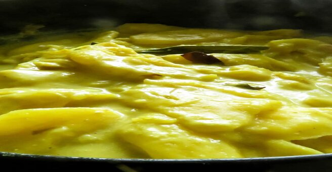

Jackfruit Curry(Sri Lankan kírí kós)
Jackfruit trees are a common sight in most gardens Sri Lanka, Once the fruit is ripe, they turn into a beautiful yellow-orange hue, giving off a sweet fragrance that is easy to recognize. But what’s truly amazing is the taste it takes on from a green jackfruit to a young/green jackfruit to the ripe stage of the fruit. When it’s unripe, the green jackfruit tends to be quite firm in its texture this makes it easy for the fruit to withstand the high heat while it cooks. This texture and the natural starch help the jackfruit to soak in the flavor from the different Sri lanky spices we add to it. And then as the jackfruit ripens, it turns into sweet, delectable exotic fruit that you can’t help carving and falling in love with.
INGREDIENTS
- 3 tablespoons of oil
- 5 cloves of garlic cloves finely sliced
- 1 medium onion finely sliced
- 1 teaspoon of red chili flecks
- 1 teaspoon of mustard seeds
- 20-25 unripe jackfruit pods, cleaned and cut into required size(including the seeds if available)
- 1 1/2 teaspoon turmeric powder
- 1 and 1/2 teaspoon curry powder (use 1 teaspoon of coriander and 1/2 teaspoon of cumin powder for substitute)
- 1 large onion sliced
- A piece of pandan leaf
- 1-2 springs of curry leaves
- 1/2 - 1 teaspoon of ground black pepper
- 1 inch cinnamon stick
- 1-2 green chili halved
- 1 and 1/2 cup of thin milk(if you are using coconut milk powder stir in teaspoons to water and make the thin milk. If you are using the packaged liquid coconut milk, add 1/4 cup of thick milk to water to make it thin)
- 1 cup of thick coconut milk
- Salt to taste
DIRECTIONS
- discard the stringy part attached to the pods
- cut the jackfruit pod through the middle and remove the seed
- place the jack seeds on a hard surface use a hammer to smash the jack seed keep in mind these seeds are a little slippery
- once the seeds are crushed, remove the hard translucent skin and use the seed to make the jackfruit curry.
Before we get to preparing the jackfruit pods to be cooked, removing these pods from the actual fruit itself can be a task. Most Asian countries would have the whole fruit for sale but if you are living outside of this region you might have to try your asian stores or find the canned version of the jackfruit.
Keep the sliced jackfruit and the seeds that have been chopped into half in a bowl. Use a medium-sized pan and set it over a medium fire. Once the pan heats, begin with the tempering. Pour in the oil(3tbsps), leave it to heat and add the curry leaves, onion(1 medium), a few pieces of sliced garlic(2 pods sliced), red chili flakes(1 tsp), mustard seed(1 teaspoon). Make sure to add ingredients in the given order above for the best results. Temper or sauté until they turn slightly brown. 3-5 minutes over low medium fire. Remove the tempered ingredients into a small bowl. Place the same pan you used to temper over medium heat. Add the jackfruit pods.followed by turmeric powder(1/2 tsp), curry powder(1 and 1/2 tsp), mustard seed(1/2 tsp), garlic(3 cloves sliced), finely sliced onion(1 large), pandan leaf, curry leaves(4-5 leaves), pepper(1/2 to 1 tsp), cinnamon stick(1” piece), salt(1/2 tsp, adjust later). Pour in the thin coconut milk, and mix gently. Leave the curry to cook slightly covered until the liquid is reduced and the jackfruit turns soft. This would take 20-25 minutes over the low-medium fire. Once the jackfruit turn semi-soft, pour in the thick coconut milk(You can use the thin coconut milk or thick milk curry should be thick and creamy). Reduce the heat and let the curry simmer until the gravy is reduced and you reach the correct consistency for the jackfruit. This would be a thick mushy jackfruit curry. Season with salt if necessary, add the tempered ingredients and slowly mix the tempered ingredients into the curry. Do not overmix. Serve while still warm with your favourite rice and curry dishes.